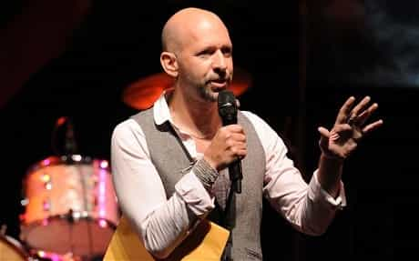

< < < Back
3 Reasons Neil Strauss And Tucker Max Abandoned The Ideas That Made Them Rich And Famous – Return Of Kings
The news that Neil Strauss has repudiated game (at least for commercial reasons) did not come as a surprise to me. His newest book, The Truth, means that the first post-2000 mass messengers of game and the glorified frat boy lifestyle respectively have been laid to rest. Strauss joins Tucker Max, who capitalized on men’s desire to frat their way through life, in endorsing marriage and fatherhood.
Neil Strauss’ abrupt about-face poses a serious ethical dilemma, as he is now castigating the same ideals he made all his fame and the vast bulk of his money from. Tucker Max, on the other hand, has slid slowly but surely into his current position. In the past, both men failed to ground game and the frat boy lifestyle in wider criticisms of a society increasingly restrictive of masculinity. So when the going got tough, they scattered.
Max faded the fastest, now spending his days taking gay-themed potshots at Roosh and regularly reminding everyone about his over-domestication via photos and tweets:
So for what specific reasons have they left?
1. They can’t make any more money off of it

Alas, Tucker Max couldn’t get the level of work he wanted by writing more frat boy books.
Obviously, Strauss and Max can still make something from their old adventures and work. Their books will keep selling, though at a snail’s pace compared to when they were truly in the public eye. There were only so many more insights and tidbits they could provide to audiences on the themes of game and frat boy lifestyles. Strauss, the better writer, also had the advantage of not tying his work to a particular phase of life like Max, who from the outset typecast his writing in the form of idealizing the university party lifestyle.
Public interest, after a time, will wane, similar to the ebb and flow of the yo-yo crazes of the 1990s or Pokémon after God knows how long. Just because game especially was focused on kinds of male self-improvement, not idle pastimes, doesn’t make its long-term fate any different. In fact, the effort required to cultivate game, against the backdrop of a sanitized but nevertheless ruthless dating environment, is usually a short thrill for users before the hard reality of the new world they’ve entered sets in. Most then return to tricking one’s self about the true nature of many women and denying the mortality of human sexual interest.
If you need proof of this, take a look at the returns of the movie about Tucker Max, one of the biggest box office bombs the year it was released and critically regarded as a pile of radioactive cinematic manure.
2. They were surpassed by others

Roosh and a host of others soon entered the PUA market and undermined Strauss’ dominance of it.
Related to the last reason, the two have additionally faced substantial competition. In the cause of Neil Strauss in particular, a veritable menagerie of writers, program creators and others caused a glut in the PUA market. Some challengers, like Roosh, became household names with strong, dedicated fan bases, while others sold dud information and achieved no real public salience. With so many people sensing the opportunities from writing and disseminating material about these related sub-cultures, people like Neil Strauss and Tucker Max basically ensured their eventual obsolescence.
Max himself had been outflanked by Strauss, whose beta backstory made many men feel like game was more within their reach. The frat boy lifestyle was narrower, while The Game peddled the idea that any nice-guy loser could catapult themselves into being sought after by any woman. Then Strauss, though recognized as the messenger of modern game, became lost amidst the thronging crowd of would-be PUA entrepreneurs. He may be the top dog in game history according to the majority of readers, but this is a far cry from ensuring he would remain equally famous down the years.
This dynamic is all the more apparent when we look at the continued audience Return of Kings is enjoying. Rather than incessantly divorcing game from a self-imploding, disintegrating society, Roosh saw the need to explain to men why game and now Neomasculinity are so indispensable. And beyond their own carnal desires, men also have a responsibility to fight back and save this society from itself.
Strauss and Max were never concerned about these issues, which explains their loss of importance, despite them never fundamentally criticizing the social status quo in a way that risked a massive backlash from SJWs and vested interests.
3. They fell for the same traps they warned men about
All men can say they found “the one” and didn’t settle.
As men age, who’s to say they don’t abandon the ideas and regimens they once staked their lives on? Even professional athletes who retire without significant injury are often fat slobs in only a few years. People like Neil Strauss and Tucker Max are no different just because they practiced game and the “eternal” frat boy lifestyle, not dunks and lay-ups. When they thought about what they would do next in life, did they start to lose the edge they claimed to have developed over the years? It’s a good bet after that they were tempted by the siren calls they had explicitly or implicitly coached men to avoid, such as one-itis or settling down.
Like the amateur PUA who finds a quasi-red pill reality difficult over time, chances are Tucker Max and Neil Strauss felt the pressure of being public spokesmen teaching men about life’s hard truths. Strauss was more upfront about these truths than Max, yet even the latter made it clear enough to his disciples that women want a man who can be the life of the party, bring them constant thrills and a slew of male attributes most have to work hard at or can never attain.
The landing was notably rough for Max, whose written maxims depended on youth and being some sort of natural alpha. Naturalness almost always loses its luster once you’re out of college.
What offers the post-game answers you’re looking for?
Roosh’s Neomasculinity has two major drawcards Strauss and Max always lacked: a basic challenge to the sexual status quo and internal consistency between a man’s single and family life stages.
Roosh’s neomasculinity plugs the gaps that were ever-present in the writings of Neil Strauss and Tucker Max. There is nothing inherently wrong with marriage and fatherhood, provided you’re doing it with the right philosophy, one which asserts your masculinity instead of the status quo trying to strangle it. Game and its offshoots are not diametrically opposed to settling down. What must happen, though, is that the hard truths discussed in game need to be carried over into marriage and fatherhood, along with actionable plans to self-improve and self-actualize.
Strauss and Max’s shift to family life only confuses most men. They smell the hypocrisy of squeezing millions of dollars from disowned lifestyles. How can these men be taken seriously in peddling new philosophies when they spent so many years living radically different ones? Single life and family life may have different priorities, but with neomasculinity you have access to an ideological continuity that is powerful, not just internally consistent.
Maybe one day, perhaps silently, Neil Strauss and Tucker Max will comprehend the errors of their midlife U-turns. If not, how about they return all the money they made from preaching false Gospels? It’s easier to assess and trust the genuineness of men who do that.
Read More: Neil deGrasse Tyson’s 20 Greatest Musings On Love